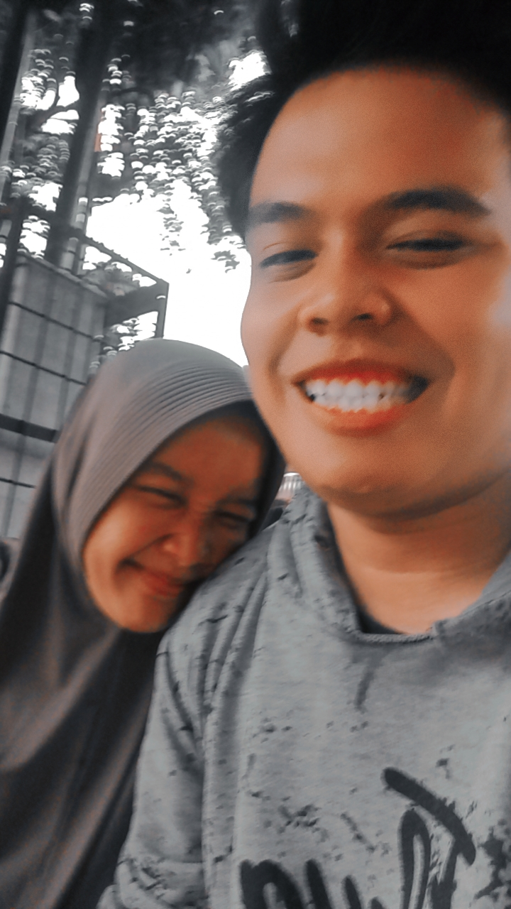
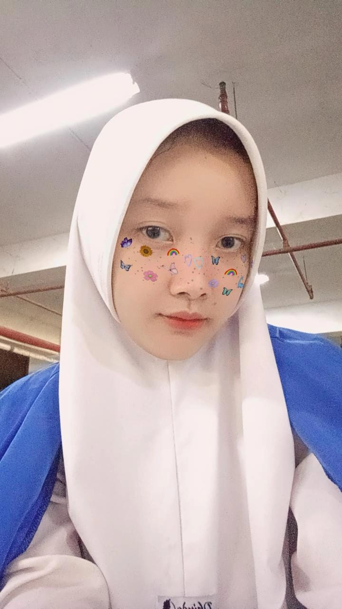

Ray&Dinah
"Dan di antara tanda-tanda kekuasaan-Nya ialah Dia menciptakan untukmu pasangan dari jenismu sendiri, supaya kamu merasa tenteram kepadanya, dan dijadikan-Nya di antaramu rasa kasih dan sayang."
Mempelai
Dengan penuh syukur
kami mengundang Bapak/Ibu/Saudara/i untuk hadir dan memberikan doa restu bagi pernikahan kami.

Ray
Putra dari
Bapak (Nama Ayah)
& Ibu (Nama Ibu)

Dinah
Putri dari
Bapak (Nama Ayah)
& Ibu (Nama Ibu)
Hari Bahagia
Menghitung hari
Sampai kami resmi menjadi sepasang suami istri.
Akad Nikah
Resepsi
Lokasi
Tempat acara
Gedung Serbaguna (nama venue)
Jl. Contoh Alamat No. 10, Depok, Jawa Barat
(Depok)
Galeri
Sepenggal cerita kami
Foto Foto saat kita bersama.
RSVP
Konfirmasi kehadiran
Mohon konfirmasi kehadiran & tinggalkan doa restu untuk kami berdua.
- Belum ada ucapan. Jadilah yang pertama 🤍
Merupakan suatu kehormatan dan kebahagiaan bagi kami apabila Bapak/Ibu/Saudara/i berkenan hadir untuk memberikan doa restu. Atas kehadiran dan doanya, kami ucapkan terima kasih.
Ray & Dinah